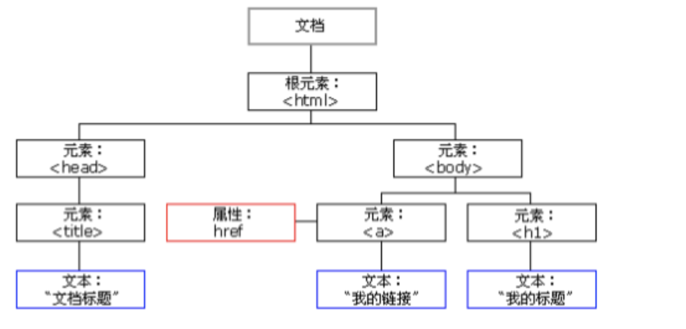
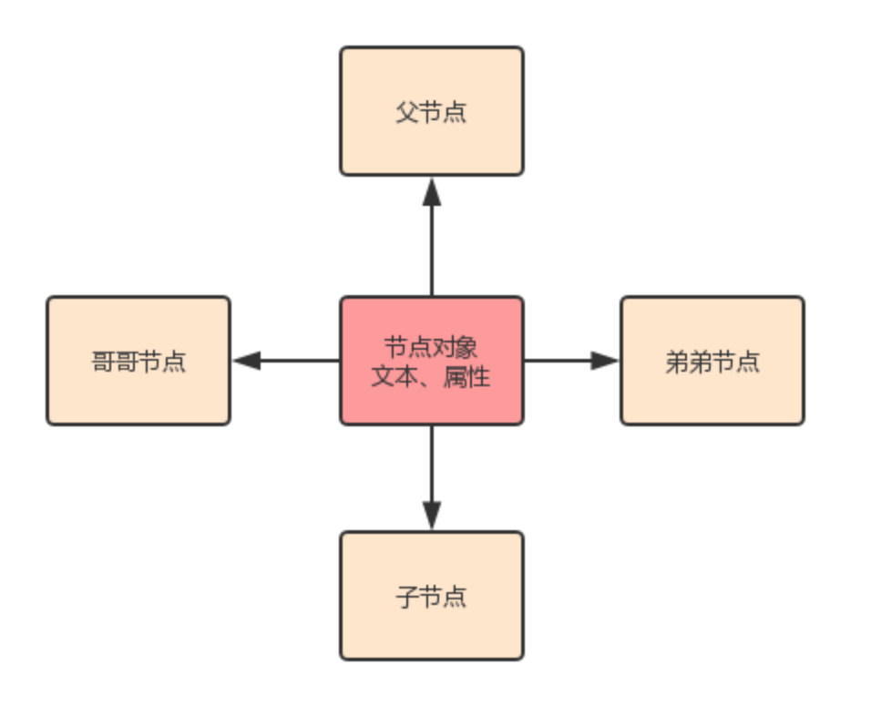
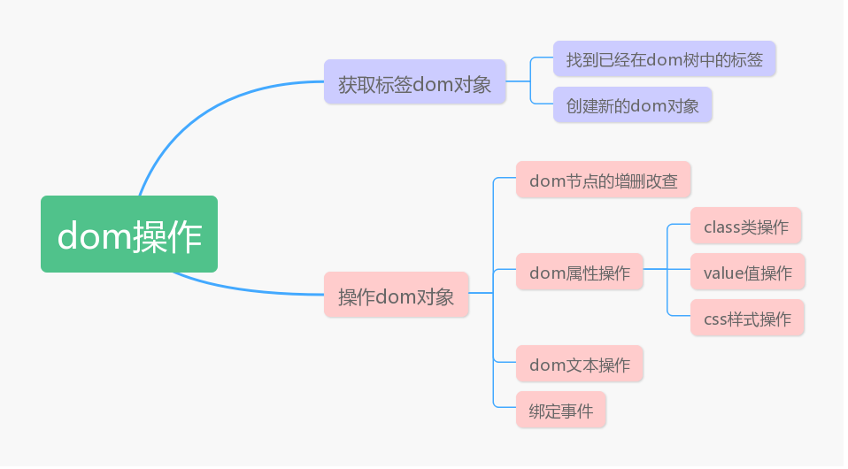
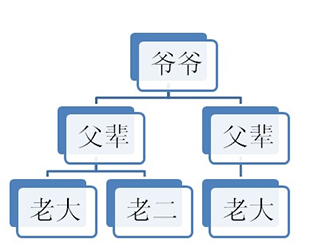
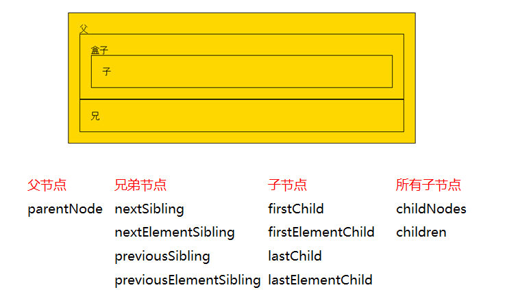
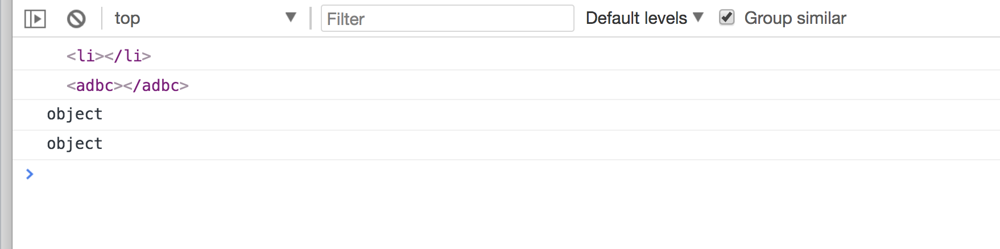
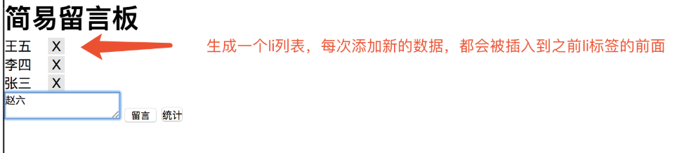

目录
DOM：文档对象模型。DOM 为文档提供了结构化表示，并定义了如何通过脚本来访问文档结构。目的其实就是为了能让js操作html元素而制定的一个规范。
DOM就是由节点组成的：HTML加载完毕，渲染引擎会在内存中把HTML文档，生成一个DOM树。

在HTML当中，一切都是节点：（非常重要）
整个html文档就是一个文档节点。所有的节点都是Object。
object节点维护的内容

dom操作的内容

DOM节点的获取方式其实就是获取事件源的方式
操作元素节点，必须首先找到该节点。有三种方式可以获取DOM节点：
var div1 = document.getElementById("box1"); //方式一：通过id获取单个标签
var arr1 = document.getElementsByTagName("div1"); //方式二：通过 标签名 获得 标签数组，所以有s
var arr2 = document.getElementsByClassName("hehe"); //方式三：通过 类名 获得 标签数组，所以有s
//其中方式二、方式三获取的是标签数组，那么习惯性是先遍历之后再使用。即便如此，这一个值也是包在数组里的。这个值的获取方式如下：
document.getElementsByTagName("div1")[0]; //取数组中的第一个元素
document.getElementsByClassName("hehe")[0]; //取数组中的第一个元素特殊情况：数组中的值只有1个。
DOM的节点并不是孤立的，因此可以通过DOM节点之间的相对关系对它们进行访问。如下：

节点的访问关系，是以属性的方式存在的。
JS中的父子兄访问关系：

这里我们要重点知道parentNode和children这两个属性的用法。下面分别介绍。
调用者就是节点。一个节点只有一个父节点，调用方式就是
节点.parentNode下一个兄弟节点
版本说明
nextSibling：指的是下一个节点（包括标签、空文档和换行节点）
火狐、谷歌、IE9+版本：都指的是下一个节点（包括标签、空文档和换行节点）。
IE678版本：指下一个元素节点（标签）。
nextElementSibling：火狐、谷歌、IE9+版本：指的是下一个元素节点（标签）。总结：为了获取下一个元素节点，我们可以这样做：在IE678中用nextSibling，在火狐谷歌IE9+以后用nextElementSibling.
前一个兄弟节点
版本说明
previousSibling：
火狐、谷歌、IE9+版本：都指的是前一个节点（包括标签、空文档和换行节点）。
IE678版本：指前一个元素节点（标签）。
previousElementSibling：
火狐、谷歌、IE9+版本：都指的是前一个元素节点（标签）。总结：为了获取前一个元素节点，我们可以这样做：在IE678中用previousSibling，在火狐谷歌IE9+以后用previousElementSibling.
补充：获得任意一个兄弟节点：
节点自己.parentNode.children[index]; //随意得到兄弟节点获取子节点——单个子节点
1、第一个子节点 | 第一个子元素节点：
版本说明
firstChild：
火狐、谷歌、IE9+版本：都指的是第一个子节点（包括标签、空文档和换行节点）。
IE678版本：指第一个子元素节点（标签）。
firstElementChild：
火狐、谷歌、IE9+版本：都指的是第一个子元素节点（标签）。总结：为了获取第一个子元素节点，我们可以这样做：在IE678中用firstChild，在火狐谷歌IE9+以后用firstElementChild.
2、最后一个子节点 | 最后一个子元素节点：
版本说明
lastChild：
火狐、谷歌、IE9+版本：都指的是最后一个子节点（包括标签、空文档和换行节点）。
IE678版本：指最后一个子元素节点（标签）。
lastElementChild：
火狐、谷歌、IE9+版本：都指的是最后一个子元素节点（标签）。总结：为了获取最后一个子元素节点，我们可以这样做：在IE678中用lastChild，在火狐谷歌IE9+以后用lastElementChild.
childNodes：标准属性
子节点数组 = 父节点.childNodes; //获取所有节点。
返回的是指定元素的子元素节点的集合。【重要】
它只返回HTML节点，甚至不返回文本节点。
在IE6/7/8中包含注释节点（在IE678中，注释节点不要写在里面）。
虽然不是标准的DOM属性，但它和innerHTML方法一样，得到了几乎所有浏览器的支持。
children：非标准属性（用的最多）
子节点数组 = 父节点.children; //获取所有节点。用的最多。
节点的访问关系都是属性。而节点的操作都是函数（方法）。
新的标签(元素节点) = document.createElement("标签名");
比如，如果我们想创建一个li标签，或者是创建一个不存在的adbc标签，可以这样做：
<script type="text/javascript">
var a1 = document.createElement("li"); //创建一个li标签
var a2 = document.createElement("adbc"); //创建一个不存在的标签
console.log(a1);
console.log(a2);
console.log(typeof a1);
console.log(typeof a2);
</script>
结果：

父节点.appendChild(新的子节点);//方式1：父节点的最后插入一个新的子节点。
父节点.insertBefore(新的子节点,作为参考的子节点);//方式2：在参考节点前插入一个新的节点。如果参考节点为null，那么他将在父节点最后插入一个子节点。
父节点.removeChild(子节点);//用父节点删除子节点。必须要指定是删除哪个子节点。
node1.parentNode.removeChild(node1);//删除自己这个节点
要复制的节点.cloneNode(); //括号里不带参数和带参数false，效果是一样的。不带参数/带参数false：只复制节点本身，不复制子节点。
要复制的节点.cloneNode(true); //带参数true：既复制节点本身，也复制其所有的子节点。
父节点.replaceChild(newnode, 某个节点); //找到这个父标签里面的要被替换的子标签，然后用新的标签将该子标签替换掉
我们可以获取节点的属性值、设置节点的属性值、删除节点的属性。
我们统一拿下面这个标签举例：
<img src="images/1.jpg" class="image-box" title="美女图片" alt="地铁一瞥" id="a1">
方式1：
元素节点.属性;
元素节点[属性];
<body>
<img src="images/1.jpg" class="image-box" title="美女图片" alt="地铁一瞥" id="a1">
<script type="text/javascript">
var myNode = document.getElementsByTagName("img")[0];
console.log(myNode.src);
console.log(myNode.className); //注意，是className，不是class
console.log(myNode.title);
console.log("------------");
console.log(myNode["src"]);
console.log(myNode["className"]); //注意，是className，不是class
console.log(myNode["title"]);
</script>
</body>
方式2：（推荐）
元素节点.getAttribute("属性名称");
console.log(myNode.getAttribute("src"));
console.log(myNode.getAttribute("class")); //注意是class，不是console.log(myNode.getAttribute("title"));
方式1和方式2的区别在于：前者是直接操作标签，后者是把标签作为DOM节点。推荐方式2。
方式1:
myNode.src = "images/2.jpg" //修改src的属性值
myNode.className = "image2-box"; //修改class的name
方式2：（推荐）
元素节点.setAttribute(属性名, 新的属性值);
myNode.setAttribute("src","images/3.jpg");
myNode.setAttribute("class","image3-box");
myNode.setAttribute("id","你好");
元素节点.removeAttribute(属性名);
myNode.removeAttribute("class");
myNode.removeAttribute("id");
var divEle = document.getElementById("d1")
divEle.innerText //输入这个指令，一执行就能获取该标签和内部所有标签的文本内容
divEle.innerHTML //获取的是该标签内的所有内容，包括文本和标签
var divEle = document.getElementById("d1")
divEle.innerText="1"
divEle.innerHTML="<p>2</p>" //能识别成一个p标签
elementNode.value 适用于以下标签，用户输入或者选择类型的标签：input 、select 、textarea
var iEle = document.getElementById("i1");
console.log(iEle.value);
var sEle = document.getElementById("s1");
console.log(sEle.value);
var tEle = document.getElementById("t1");
console.log(tEle.value);
className 获取所有样式类名(字符串)
首先获取标签对象
标签对象.classList.remove(cls) 删除指定类
classList.add(cls) 添加类
classList.contains(cls) 存在返回true，否则返回false
classList.toggle(cls) 存在就删除，否则添加，toggle的意思是切换，有了就给你删除，如果没有就给你加一个
obj.style.backgroundColor="red"
对于没有中横线的CSS属性一般直接使用style.属性名即可
obj.style.margin
obj.style.width
obj.style.left
obj.style.position
对含有中横线的CSS属性，将中横线后面的第一个字母换成大写即可
obj.style.marginTop
obj.style.borderLeftWidth
obj.style.zIndex
obj.style.fontFamily
JS是以事件驱动为核心的一门语言。
比如，我用手去按开关，灯亮了。这件事情里，事件源是：手。事件是：按开关。事件驱动程序是：灯的开和关。
再比如，网页上弹出一个广告，我点击右上角的X，广告就关闭了。这件事情里，事件源是：X。事件是：onclick。事件驱动程序是：广告关闭了。
于是我们可以总结出：谁引发的后续事件，谁就是事件源。
总结如下：
事件源：引发后续事件的html标签。
事件：js已经定义好了（见下图）。
事件驱动程序：对样式和html的操作。也就是DOM。
事件的三要素：事件源、事件、事件驱动程序。
代码书写步骤如下：（重要）
（1）获取事件源：document.getElementById(“box”); //类似与ios语言的 UIButton *adBtn = [UIButton buttonWithType:UIButtonTypeCustom];
（2）绑定事件： 事件源box.事件onclick = function(){ 事件驱动程序 };
（3）书写事件驱动程序：关于DOM的操作
代码举例：
<body>
<div id="box1"></div>
<script type="text/javascript">
// 1、获取事件源
var div = document.getElementById("box1");
// 2、绑定事件
div.onclick = function () {
// 3、书写事件驱动程序
alert("我是弹出的内容");
}
</script>
</body>
常见事件如下：
| 事件名 | 说明 |
|---|---|
| onclick | 鼠标单击 |
| ondblclick | 鼠标双击 |
| onkeyup | 按下并释放键盘上的一个键时触发 |
| onchange | 文本内容或下拉菜单中的选项发生改变 |
| onfocus | 获得焦点,表示文本框等获得鼠标光标 |
| onblur | 失去焦点,表示文本框等失去鼠标光标 |
| onmouseover | 鼠标悬停,即鼠标停留在图片等得上方 |
| onmouseout | 鼠标移出,即离开图片等所在的区域 |
| onload | 网页文档加载事件 |
| onunload | 关闭网页时 |
| onsubmit | 表单提交事件 |
| onreset | 重置表单时 |
获取事件源的常见方式如下：
var div1 = document.getElementById("box1"); //方式一：通过id获取单个标签
var arr1 = document.getElementsByTagName("div1"); //方式二：通过 标签名 获得 标签数组，所以有s
var arr2 = document.getElementsByClassName("hehe"); //方式三：通过 类名 获得 标签数组，所以有s
<div id="box1" ></div>
<script type="text/javascript">
var div1 = document.getElementById("box1");
//绑定事件的第一种方式
div1.onclick = function () {
alert("我是弹出的内容");
}
</script>
<div id="box1" ></div>
<script type="text/javascript">
var div1 = document.getElementById("box1");
//绑定事件的第二种方式
div1.onclick = fn; //注意，这里是fn，不是fn()。fn()指的是返回值。
//单独定义函数
function fn() {
alert("我是弹出的内容");
}
</script>
绑定的时候，是写fn，不是写fn()。fn代表的是整个函数，而fn()代表的是返回值。
<!--行内绑定-->
<div id="box1" onclick="fn()"></div>
<script type="text/javascript">
function fn() {
alert("我是弹出的内容");
}
</script>
绑定时，是写的"fn()"，不是写的"fn"。因为绑定的这段代码不是写在js代码里的，而是被识别成了字符串。
<head>
<style>
#box {
width: 100px;
height: 100px;
background-color: pink;
cursor: pointer;
}
</style>
</head>
<body>
<div id="box" ></div>
<script type="text/javascript">
var oDiv = document.getElementById("box");
//点击鼠标时，原本粉色的div变大了，背景变红了
oDiv.onclick = function () {
oDiv.style.width = "200px"; //属性值要写引号
oDiv.style.height = "200px";
oDiv.style.backgroundColor = "red"; //属性名是backgroundColor，不是background-Color
}
</script>
上方代码的注意事项：
backgroundColor，不是CSS里面的background-Color。记得所有的像css属性的text-，line-、backgroun-*等在js中都写成驼峰当页面加载（文本和图片）完毕的时候，触发onload事件。
<script type="text/javascript">
window.onload = function () {
console.log("小马哥"); //等页面加载完毕时，打印字符串
}
</script>
js的加载是和html同步加载的。因此，如果使用元素在定义元素之前，容易报错。这个时候，onload事件就能派上用场了，我们可以把使用元素的代码放在onload里，就能保证这段代码是最后执行。
建议是：整个页面上所有元素加载完毕在执行js内容。所以，window.onload可以预防使用标签在定义标签之前。
onload事件(屏幕可视区域)
<!DOCTYPE html>
<html>
<head>
<meta charset="UTF-8">
<title></title>
</head>
<body>
</body>
<script type="text/javascript">
// 屏幕的可视区域
window.onload = function(){
// document.documentElement 获取的是html标签
console.log(document.documentElement.clientWidth);
console.log(document.documentElement.clientHeight);
// 窗口大小发生变化时，会调用此方法
window.onresize = function(){
console.log(document.documentElement.clientWidth);
console.log(document.documentElement.clientHeight);
}
}
</script>
</html>
onload事件(offset系列)
<!DOCTYPE html>
<html>
<head>
<meta charset="UTF-8">
<title></title>
<style type="text/css">
*{
padding: 0;
margin: 0;
}
</style>
</head>
<body style="height: 2000px">
<div>
<div class="wrap" style=" width: 300px;height: 300px;background-color: green">
<div id="box" style="width: 200px;height: 200px;border: 5px solid red;position: absolute;top:50px;left: 30px;">
</div>
</div>
</div>
</body>
<script type="text/javascript">
window.onload = function(){
var box = document.getElementById('box')
/*
offsetWidth占位宽 内容+padding+border
offsetHeight占位高
* offsetTop: 如果盒子没有设置定位 到body的顶部的距离,如果盒子设置定位，那么是以父辈为基准的top值
* offsetLeft： 如果盒子没有设置定位 到body的左部的距离，如果盒子设置定位，那么是以父辈为基准的left值
* */
console.log(box.offsetTop)
console.log(box.offsetLeft)
console.log(box.offsetWidth)
console.log(box.offsetHeight)
}
</script>
</html>
<!DOCTYPE html>
<html lang="en">
<head>
<meta charset="UTF-8">
<title>Title</title>
<style>
.outer{
border: solid darkgray 5px;
display: inline-block;
padding: 5px;
border-radius: 10px;
}
.light{
float: left;
height: 100px;
width: 100px;
border-radius: 50%;
background-color: lightgray;
margin-left: 5px;
}
.clearfix:after{
content: '';
clear: both;
display: inline-block;
}
.red{
background-color: red;
}
.yellow{
background-color: yellow;
}
.green{
background-color: green;
}
</style>
</head>
<body>
<div class="outer">
<div class="container clearfix">
<div class="light red"></div>
<div class="light"></div>
<div class="light"></div>
</div>
</div>
<script>
function change_color() {
var lights = document.getElementsByClassName('light')
if(lights[0].classList.contains('red')){
lights[0].classList.remove('red')
lights[1].classList.add('yellow')
}else if(lights[1].classList.contains('yellow')){
lights[1].classList.remove('yellow')
lights[2].classList.add('green')
}
else{
lights[2].classList.remove('green')
lights[0].classList.add('red')
}
}
setInterval(change_color,3000)
</script>
</body>
</html>
<!DOCTYPE html>
<html lang="en">
<head>
<meta charset="UTF-8">
<title>Title</title>
<style>
input{
width: 200px;
}
</style>
</head>
<body>
<input type="text" id="time">
<button id = 'switch'>开始</button>
</body>
<script>
var btn = document.getElementById('switch')
btn.onclick = function () {
switch (this.innerText){
case '开始':
this.innerText = '停止';
timer1 = setInterval(update,1000)
break;
case '停止':
this.innerText = '开始';
clearInterval(timer1)
break;
}
}
function update() {
var t = document.getElementById('time');
var dt = new Date();
t.value= dt.toLocaleString();
}
</script>
</html>
<!DOCTYPE html>
<html lang="en">
<head>
<meta charset="UTF-8">
<title>Title</title>
<style>
body{
margin: 0;
}
.ad{
width: 100%;
height: 60px;
background-color: red;
}
.ad_content{
position: fixed;
top: 0;
padding: 20px;
}
#close{
position: fixed;
top: 0;
right: 0;
background-color: lightgray;
height: 20px;
width: 20px;
text-align: center;
line-height: 20px;
font-size: 30px;
}
.content{
height: 2000px;
background-color: green;
}
</style>
</head>
<body>
<div class="ad" id = 'ad'>
<div class="ad_content">
我是一个广告
</div>
<div id="close">
x
</div>
</div>
<div class="content">
我是正文内容
</div>
</body>
<script>
var closebtn = document.getElementById('close')
closebtn.onclick = function () {
var ad = document.getElementById('ad')
ad.style.display = "none"
}
</script>
</html>
<!DOCTYPE html>
<html>
<head lang="en">
<meta charset="UTF-8">
<title></title>
<script>
//window.onload页面加载完毕以后再执行此代码
window.onload = function () {
//需求：鼠标放到img上，更换为另一张图片，也就是修改路径（src的值）。
//步骤：
//1.获取事件源
//2.绑定事件
//3.书写事件驱动程序
//1.获取事件源
var img = document.getElementById("box");
//2.绑定事件(悬停事件：鼠标进入到事件源中立即出发事件)
img.onmouseover = function () {
//3.书写事件驱动程序(修改src)
img.src = "image/jd2.png";
// this.src = "image/jd2.png";
}
//1.获取事件源
var img = document.getElementById("box");
//2.绑定事件(悬停事件：鼠标进入到事件源中立即出发事件)
img.onmouseout = function () {
//3.书写事件驱动程序(修改src)
img.src = "image/jd1.png";
}
}
</script>
</head>
<body>
<img id="box" src="image/jd1.png" style="cursor: pointer;border: 1px solid #ccc;"/>
</body>
</html>
需求：打开网页时有一个普通的按钮，点击当前按钮显示一个背景图，中心并弹出一个弹出框，点击X的时候会关闭当前的模态框
<!DOCTYPE html>
<html lang="zh-cn">
<head>
<meta charset="UTF-8">
<title>啦</title>
<style>
</style>
</head>
<body>
<select id="country" onchange="city_1(this)">
<option value="-1">--请选择--</option>
<option value="0">辽宁</option>
<option value="1">北京</option>
<option value="2">吉林</option>
</select>
<select id="city1" onchange="city_2(this)">
<option value="-1">--请选择--</option>
</select>
<select id="city2">
<option value="-1">--请选择--</option>
</select>
</body>
<script>
var city0_list = [
["沈阳","大连","抚顺"],
["海淀","大兴","朝阳"],
["长春","吉林市","清源"]
];
var city1_list = [
[["大东","铁西","沈河"],["大连1","大连2","大连3"],["抚顺1","抚顺2","抚顺3"]],
[["海淀1","海淀2","海淀3"],["大兴1","大兴2","大兴3"],["朝阳1","朝阳2","朝阳3"]],
[["长春1","长春2","长春3"],["吉林市1","吉林市2","吉林市3"],["清源1","清源2","清源3"]]
];
function city_1(obj) {
var a = document.getElementById("city1");
var b = document.getElementById("city2");
a.options.length = 1;
b.options.length = 1;
for (var i = 0;i < city0_list[parseInt(obj.value)].length;i++){
var opt = document.createElement("option");
opt.innerText = city0_list[parseInt(obj.value)][i];
opt.value = i;
a.options.add(opt);
}
}
function city_2(obj) {
var main = document.getElementById("country");
var b = document.getElementById("city2");
var val = main.value;
b.options.length = 1;
for (var i = 0;i < city1_list[parseInt(val)][obj.value].length;i++){
var opt = document.createElement("option");
opt.innerText = city1_list[parseInt(val)][obj.value][i];
opt.value = i;
b.options.add(opt);
}
}
</script>
</html>
需求：当在textarea中输入内容，点击留言按钮，会添加到浏览器中，效果图如下：

<!DOCTYPE html>
<html>
<head>
<meta charset="UTF-8">
<title>留言板</title>
<style type="text/css">
*{
padding: 0;
margin: 0;
}
.close{
display: inline-block;
width: 20px;
height: 20px;
line-height: 20px;
text-align: center;
cursor: pointer;
background-color: rgba(0,0,0,.1);
margin-left: 20px;
}
</style>
</head>
<body>
<h1>简易留言板</h1>
<div id="box">
<!--<ul>
</ul>-->
</div>
<textarea id="msg"></textarea>
<input type="button" id="btn" value="留言"/>
<button onclick="sum()">统计</button>
</body>
<script type="text/javascript">
// 0 将ul标签添加到div#box标签中
var oUl = document.createElement('ul');
var oBox = document.getElementById('box');
oBox.appendChild(oUl);
var oBtn = document.getElementById('btn');
var oMsg = document.getElementById('msg')
// 控制留言的总数量
var count = 0;
oBtn.onclick = function(){
// 点击留言按钮事件操作
// 1.创建li标签
var oLi = document.createElement('li');
//2.设置内容
oLi.innerHTML = oMsg.value + "<span class='close'>X</span>"
// 3.如果想在插入的第一个li获取的前面继续添加li标签
//3.1获取li标签
var olis = document.getElementsByTagName('li');
//3.2 如果是第一次添加的li标签，则直接添加到ul的后面
if(olis.length == 0){
oUl.appendChild(oLi);
count++;
}else{
// 3.3 如果不是第一次添加的li标签，则插入到第一个li标签的前面
oUl.insertBefore(oLi,olis[0]);
count++;
}
// 4.添加完成之后 清空textarea的值
oMsg.value = '';
// 5.点击X的时候删除当前的一条数据
//5.1先获取所有的X
var oSpans = document.getElementsByTagName('span');
// 5.2for循环 对所有的X添加点击事件
for(var i = 0; i< oSpans.length; i++){
oSpans[i].onclick = function(){
// 5.3 移除当前的li标签
oUl.removeChild(this.parentNode)
count--;
}
}
}
function sum(){
alert('一共发布了'+count+'条留言');
}
</script>
</html>
<!DOCTYPE html>
<html>
<head lang="en">
<meta charset="UTF-8">
<title></title>
<style>
button {
margin: 10px;
width: 100px;
height: 40px;
cursor: pointer;
}
.current {
background-color: red;
}
</style>
</head>
<body>
<button>按钮1</button>
<button>按钮2</button>
<button>按钮3</button>
<button>按钮4</button>
<button>按钮5</button>
<script>
//需求：鼠标放到哪个button上，改button变成黄色背景（添加类）
var btnArr = document.getElementsByTagName("button");
//绑定事件
for(var i=0;i<btnArr.length;i++){ //要为每一个按钮绑定事件，所以用到了for循环
btnArr[i].onmouseover = function () {
//【重要】排他思想：先把所有按钮的className设置为空，然后把我（this）这个按钮的className设置为current
//排他思想和for循环连用
for(var j=0;j<btnArr.length;j++){
btnArr[j].className = "";
}
this.className = "current"; //【重要】核心代码
}
}
//鼠标离开current时，还原背景色
for(var i=0;i<btnArr.length;i++){ //要为每一个按钮绑定事件，所以用到了for循环
btnArr[i].onmouseout = function () { //鼠标离开任何一个按钮时，就把按钮的背景色还原
this.className = "";
}
}
</script>
</body>
</html>
鼠标悬停时，current栏变色，这里用到了排他思想：先把所有按钮的className置空，然后把(this)按钮的className设置为current，达到变色的效果。核心代码：
//排他思想：先把所有按钮的className设置为空，然后把我（this）这个按钮的className设置为current
//排他思想和for循环连用
for(var j=0;j<btnArr.length;j++){
btnArr[j].className = "";
}
this.className = "current";
核心代码
<!DOCTYPE html>
<html>
<head>
<meta charset="UTF-8">
<title></title>
<style type="text/css">
*{
padding: 0;
margin: 0;
}
ul{
list-style: none;
}
#tab{
width: 480px;
margin: 20px auto;
border: 1px solid red;
}
ul{
width: 100%;
overflow: hidden;
}
ul li{
float: left;
width: 160px;
height: 60px;
line-height: 60px;
text-align: center;
background-color: #cccccc;
}
ul li a{
text-decoration: none;
color:black;
}
li.active{
background-color: red;
}
p{
display: none;
height: 200px;
text-align: center;
line-height: 200px;
background-color: red;
}
p.active{
display: block;
}
</style>
</head>
<body>
<div id="tab">
<ul>
<li class="active">
<a href="#">首页</a>
</li>
<li>
<a href="#">新闻</a>
</li>
<li>
<a href="#">图片</a>
</li>
</ul>
<p class="active">首页内容</p>
<p>新闻内容</p>
<p>图片内容</p>
</div>
</body>
<script type="text/javascript">
window.onload = function(){
// //需求：鼠标放到上面的li上，li本身变色(添加类)，对应的p也显示出来(添加类);
//思路：1.点亮上面的盒子。 2.利用索引值显示下面的盒子。
var tabli = document.getElementsByTagName('li');
var tabContent = document.getElementsByTagName('p')
for(var i = 0; i < tabli.length; i++){
// 绑定索引值（新增一个自定义属性：index属性）
tabli[i].index = i;
tabli[i].onclick = function(){
// 1.点亮上面的盒子。 2.利用索引值显示下面的盒子。(排他思想)
for(var j = 0; j < tabli.length; j++){
tabli[j].className = '';
tabContent[j].className = '';
}
this.className = 'active'
tabContent[this.index].className = 'active';//【重要代码】
}
}
}
</script>
</html>
<!DOCTYPE html>
<html lang="en">
<head>
<meta charset="UTF-8">
<title></title>
<style type="text/css">
*{
padding: 0;
margin: 0;
}
.box{
width: 500px;
height: 400px;
margin: 100px auto;
background-color: rgba(255,255,255,0.4);
position: relative;
}
.car{
width: 150px;
height: 30px;
background-color: #fff;
padding-left: 30px;
position: absolute;
left: 130px;
top: 3px;
z-index: 3;
border: 1px solid green;
}
.shop{
width: 310px;
height: 70px;
background-color: #fff;
position: absolute;
top:33px;
left: 0;
display: none;
}
div.c{
border-bottom-width: 0;
}
div.t{
border: 1px solid green;
}
</style>
</head>
<body>
<div class="box">
<div class="car" id="myCar">我的购物车</div>
<div class="shop t" id="shop"></div>
</div>
<script type="text/javascript">
var myCar = document.getElementById('myCar');
var shop = document.getElementById('shop');
myCar.onmouseover = function(){
shop.style.display = 'block';
myCar.className +=' c';
}
myCar.onmouseout = function(){
shop.style.display = 'none';
myCar.removeAttribute('class');
myCar.className = 'car';
}
</script>
</body>
</html>
<!DOCTYPE html>
<html lang="en">
<head>
<meta charset="UTF-8">
<title>Title</title>
<style>
div span{
display: inline-block;
height: 150px;
line-height: 150px;
font-size: 50px;
}
.num {
background-color: lightgray;
width: 100px;
text-align: center;
border-radius: 10px;
}
.btn{
padding: 20px;
text-align: center;
}
</style>
</head>
<body>
<div>
<div>
<span class="num" id="hour0">0</span>
<span class="num" id="hour1">0</span>
<span>:</span>
<span class="num" id="minute0">0</span>
<span class="num" id="minute1">0</span>
<span>:</span>
<span class="num" id="second0">0</span>
<span class="num" id="second1">0</span>
</div>
<div class="btn">
<button id = 'start'>开始计时</button>
<button id = 'stop'>停止计时</button>
<button id = 'reset'>重置计时</button>
</div>
</div>
<script>
var start = document.getElementById('start')
var stop = document.getElementById('stop')
var reset = document.getElementById('reset')
start.onclick = function () {
interval = setInterval('change_bar("second",6)',1000)
}
function change_bar(idval,maxval) {
var s1 = document.getElementById(idval+'1');
var s1_value = parseInt(s1.innerText)
s1_value++
if(s1_value===10){
s1_value = 0;
var s0 = document.getElementById(idval+'0');
var s0_value = parseInt(s0.innerText)
s0_value++
if(s0_value===maxval){
s0_value=0
if(idval === 'second'){
change_bar('minute',6)
}else if(idval === 'minute'){
change_bar('hour',10)
}
}
s0.innerText = s0_value
}
s1.innerText = s1_value
}
stop.onclick = function () {
clearInterval(interval)
}
reset.onclick = function () {
clearInterval(interval)
var spans = document.getElementsByClassName('num')
for(var i=0;i<spans.length;i++){
spans[i].innerText=0
}
}
</script>
</body>
</html>
<!DOCTYPE html>
<html lang="en">
<head>
<meta charset="UTF-8">
<title>Title</title>
</head>
<body>
<div>
<span id = 'content'>热烈庆祝23期学生全体就业</span>
</div>
<script>
setInterval(f,200)
function f() {
var content = document.getElementById('content');
var color = parseInt(Math.ceil(Math.random()*16777216),16)
content.style.color = '#'+color
}
</script>
</body>
</html>